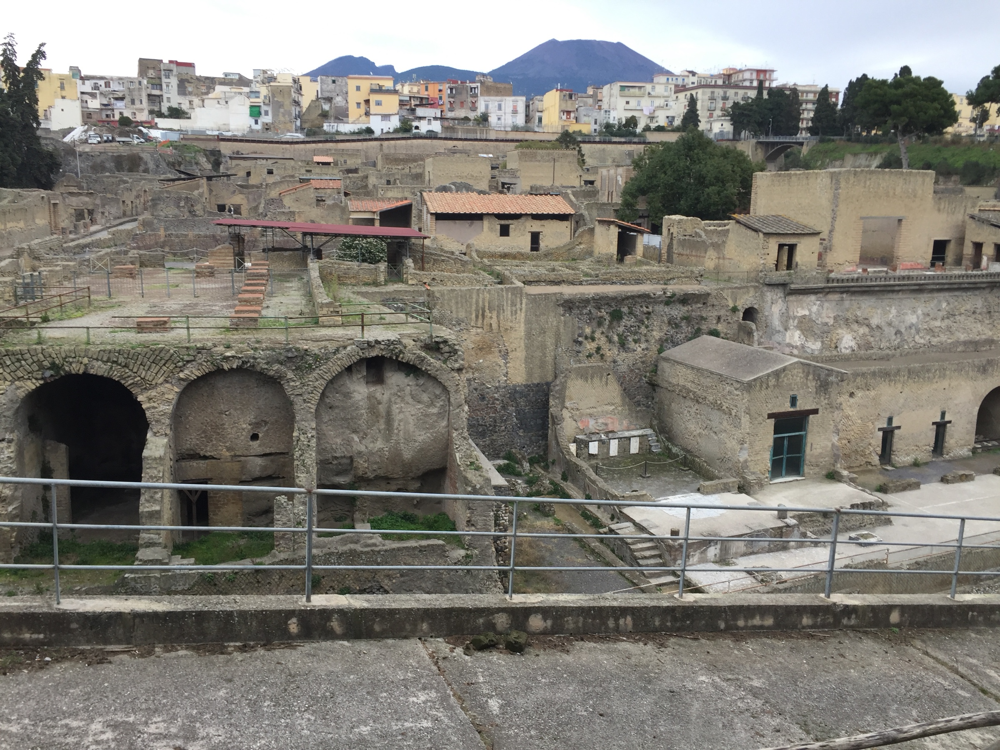
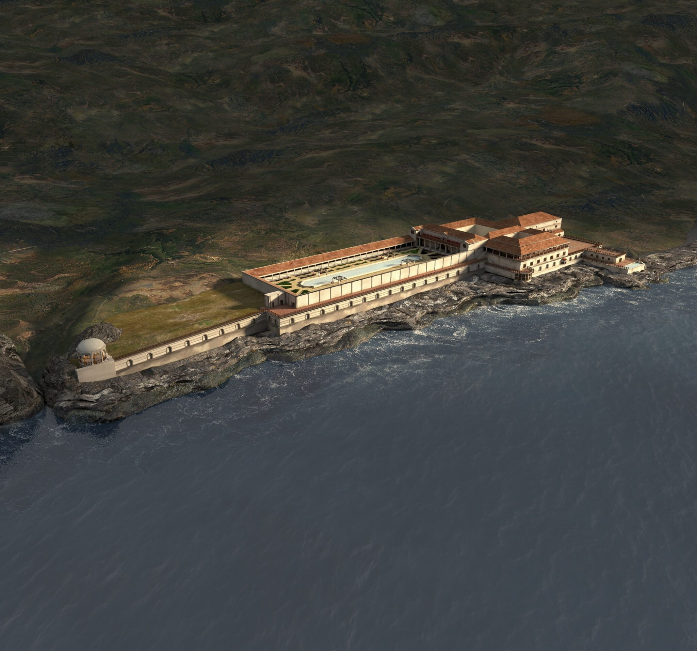
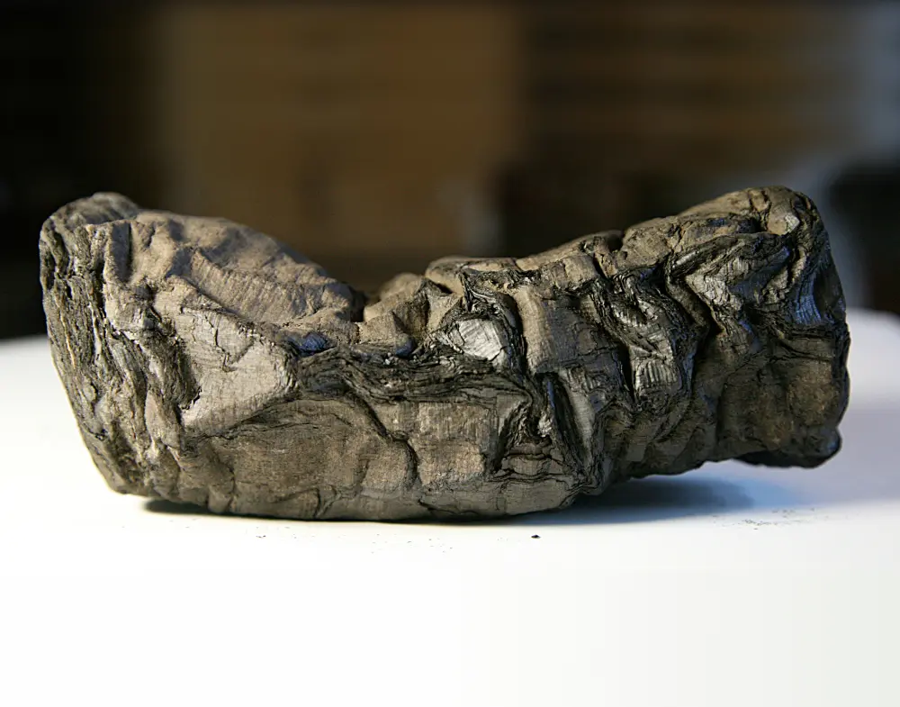
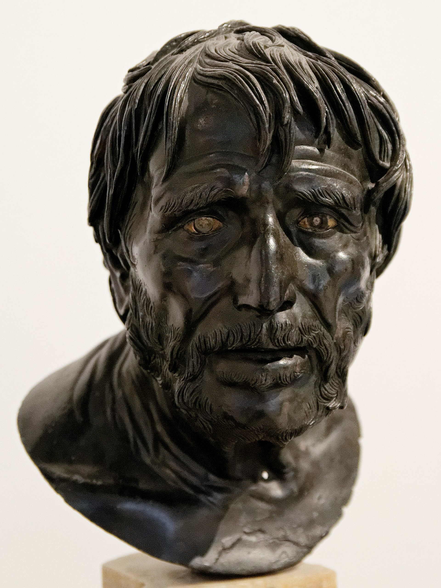
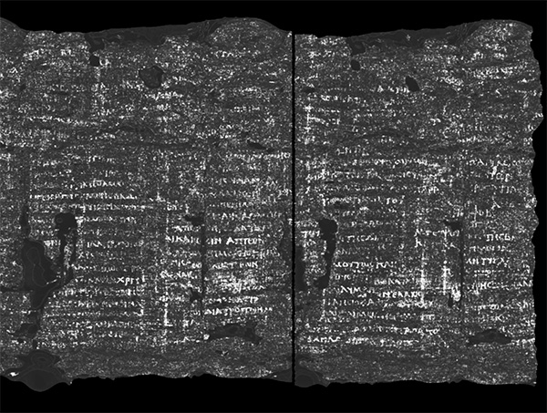
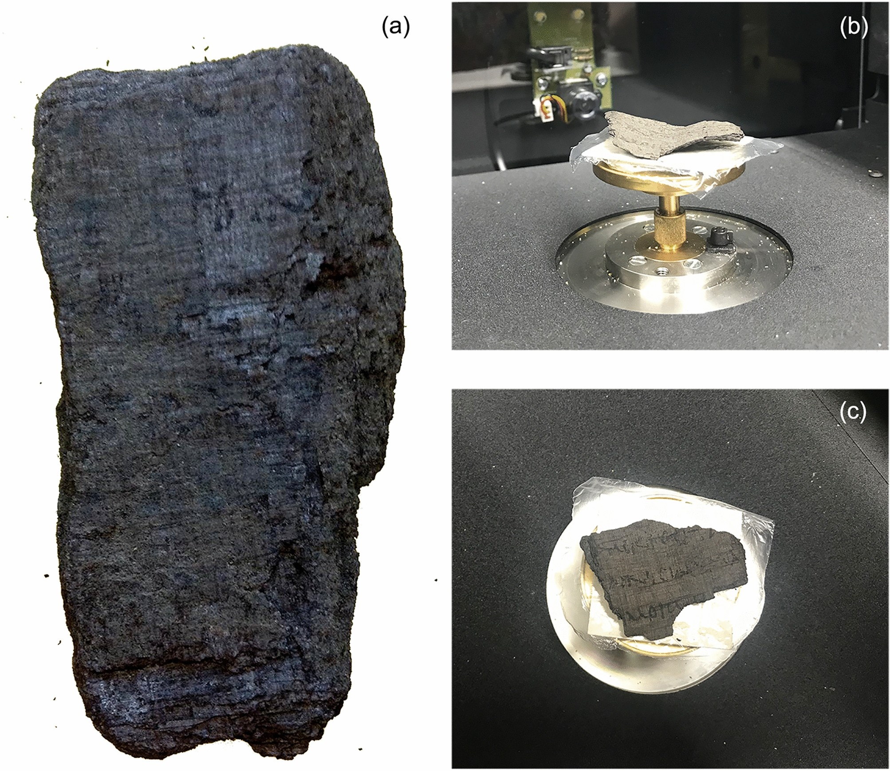
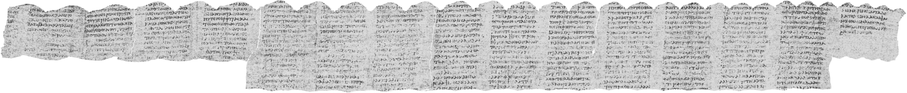

{kind=link}

Introduction: The City That Became a Time Capsule
In the shadow of Mount Vesuvius, beneath layers of volcanic stone, ash, and compacted darkness, there slept a city unlike any other. Herculaneum was not merely destroyed. It was sealed.
Where Pompeii became an open wound of ash and silence, Herculaneum became something stranger: a chamber of preservation. Its houses, wooden beams, food, frescoes, furniture, statues, and written scrolls were entombed in a volcanic tomb so sudden and absolute that time itself seemed to halt. In this buried city, the ancient world did not simply vanish. It waited.
Among the greatest treasures recovered from Herculaneum is the Villa of the Papyri, a luxurious Roman residence overlooking the Bay of Naples. Within it lay the only substantial library from classical antiquity ever discovered in its original archaeological context. Its papyrus scrolls, blackened and carbonized by the heat of the eruption, were transformed into fragile cylinders resembling charcoal.
Yet within those charred fragments lay lost philosophy. Within those blackened scrolls lay the voice of Philodemus of Gadara, an Epicurean philosopher whose works would otherwise have survived only in fragments and references.
For nearly two thousand years, the library remained physically present but intellectually inaccessible. Now, through advanced imaging, artificial intelligence, virtual unwrapping, and the collaboration of papyrologists and computer scientists, the Herculaneum scrolls are beginning to speak again.
Herculaneum and the Eruption of Vesuvius
In A.D. 79, Mount Vesuvius erupted with catastrophic force. Pompeii was buried beneath falling ash and pumice. Herculaneum, closer to the volcano and nearer the coastline, was struck by superheated pyroclastic surges.
These waves of gas, ash, and volcanic debris moved with terrifying speed. Their heat carbonized organic materials almost instantly. Wood did not simply burn away; in many cases, it was seared into preservation. Papyrus suffered the same fate. The scrolls were not consumed into nothingness. They were turned into carbon.
This is one of history's great paradoxes. The disaster that destroyed Herculaneum also preserved it. The result was an archaeological miracle: an ancient library preserved by catastrophe.
The Villa of the Papyri: A Palace of Philosophy

The Villa of the Papyri was discovered in the eighteenth century during Bourbon excavations. It was an immense and elegant seaside villa filled with sculptures, colonnades, gardens, fountains, and refined architectural spaces.
What makes the villa unique is not only its beauty, but its library. In its rooms and storage areas were found hundreds of papyrus rolls, many of them Greek philosophical texts. The collection appears to have been especially rich in Epicurean works, particularly those associated with Philodemus of Gadara.
It was not simply a wealthy man's house. It was a philosophical archive. It was a library of doctrine, debate, literary criticism, theology, and ethical instruction. Its owner collected arguments, intellectual lineages, and voices.
The Charcoal Scrolls

When excavators first encountered the papyri, they did not immediately understand what they had found. The rolls were black, brittle, and distorted. Many looked like pieces of burnt wood. Only gradually did scholars realize that these carbonized cylinders were books.
The problem was devastatingly simple: how does one read a scroll that cannot be opened? Papyrus is fragile under ordinary conditions. Carbonized papyrus is far more delicate. Attempts to unroll the scrolls physically often caused them to crumble.
For centuries, the Herculaneum papyri stood at the boundary between presence and absence. They existed. They were real. But most could not be read. They were books without access, a library locked inside itself.
The Only Library of Its Kind
The Herculaneum papyri occupy a singular place in the history of human knowledge. We possess many ancient texts, but most survived through medieval manuscript transmission. The Herculaneum library is different. It is not a medieval copy of an ancient work. It is an ancient library itself.
Its scrolls were present in a Roman villa in the first century A.D., and many of the texts may have been copied only a century or two after their original composition. This gives the collection extraordinary authority.
This makes Herculaneum more than an archaeological site. It is a breach in time. Through it, we do not merely study antiquity. We come into contact with its actual textual remains.
Philodemus of Gadara: The Philosopher in the Ashes

{kind=link}
At the heart of the Herculaneum library stands Philodemus of Gadara. Philodemus was a Greek Epicurean philosopher, poet, and teacher active in the first century B.C. His works cover ethics, theology, rhetoric, music, poetry, logic, epistemology, and the critique of rival philosophical schools.
Epicureanism is often misunderstood. In popular imagination, it is reduced to indulgence, luxury, or sensual pleasure. But ancient Epicurean philosophy was far more disciplined. It taught tranquility, freedom from fear, friendship, moderation, clear thinking, and liberation from false beliefs about gods, death, and fate.
Because so many of Philodemus' texts survive only through Herculaneum, he is not merely one author among many. He is one of the principal voices rescued from the buried library.
On Vices: The Anatomy of Moral Corruption
One of the most important Philodemean works connected to recent breakthroughs is On Vices. This treatise belongs to the ethical dimension of Epicurean philosophy. It explores defects of character that disturb the mind, damage friendship, and prevent a person from living peacefully.
Ancient philosophy did not treat vice merely as bad behavior. Vice was a disorder of perception, desire, and judgment. In this sense, On Vices is not simply a moral manual. It is a diagnostic work. It studies the diseases of the soul.
The recovery of On Vices, Book 1 gives scholars new access to Philodemus' ethical system at the level of sustained argument rather than scattered fragments. Herculaneum becomes more than a site of antiquarian interest. It becomes a laboratory of ancient psychology.
PHerc. 172: The Oxford Scroll

Among the most exciting recent developments is the recovery of more than seventy columns of text from PHerc. 172, one of the Herculaneum scrolls housed at Oxford's Bodleian Libraries.
PHerc. 172 is extraordinary because its ink appears unusually visible under advanced X-ray imaging, making it one of the most promising scrolls for virtual reading. The identification of the work as On Vices, Book 1 gives the scroll a precise place within Epicurean ethical literature. It is no longer simply an unread artifact. It is a recovered book.
More than seventy columns are not a few isolated words. They represent extended textual continuity. A fragment gives a hint. A column gives a passage. Seventy columns may restore an entire intellectual movement to view.
On Gods, Book 8: Philodemus and Epicurean Theology
Another major discovery concerns Philodemus' On Gods, Book 8. This is especially significant because Epicurean theology is often misunderstood. Epicureans did not simply deny the gods. Rather, they rejected popular superstition and the fear that gods intervene angrily in human affairs.
For Epicurus and his followers, the gods were blessed, immortal beings, perfect in tranquility and free from disturbance. To contemplate the gods correctly was to liberate the mind from fear. Theology was not simply belief, but therapy.
The identification of On Gods, Book 8 suggests that Philodemus' theological project was more extensive than previously known. The Herculaneum library may preserve not merely scattered Epicurean reflections on gods, but a structured theological corpus.
Virtual Unwrapping: Reading Without Touching

{kind=link}
The modern recovery of the Herculaneum scrolls depends on a profound reversal of method. For centuries, reading required opening. Now, reading may require leaving the object closed.
Through high-resolution micro-CT scanning, synchrotron X-ray imaging, machine learning, and digital segmentation, researchers can map the internal structure of a scroll without physically unrolling it. The layers of papyrus can be traced in three dimensions, flattened into virtual sheets, and analyzed for traces of ink.
The machine does not understand Greek. The AI does not interpret Philodemus. It detects patterns, surfaces, and signals. The final act of reading remains human.
The Vesuvius Challenge and the New Renaissance of Papyrology

The Vesuvius Challenge has transformed the reading of the Herculaneum scrolls into an open, international effort. Researchers, coders, machine-learning specialists, students, and independent contributors now help solve the technical problems of virtual unwrapping and ink detection.
If these methods continue improving, hundreds of unopened scrolls may eventually become readable. Some may contain more works by Philodemus. Others may preserve writings by Epicurus, Metrodorus, Chrysippus, Aristotle, lost historians, poets, dramatists, or entirely unknown authors.
Even with caution, the possibility is staggering. The Herculaneum papyri may become the greatest recovery of ancient literature in modern history.
Why Herculaneum Matters
Herculaneum matters because it reminds us that the ancient world is not exhausted. We often speak as though classical antiquity is a closed canon, but what we possess is only a fraction of what once existed.
The Herculaneum scrolls reveal that loss is not always final. Sometimes a text is not gone. Sometimes it is only unread. Every newly read column alters the map. Every restored title expands the archive. Every recovered argument returns a fragment of human thought to the living world.
The Library as an Image of the Soul
There is also a symbolic power in Herculaneum. A library buried beneath volcanic darkness is an image of memory itself. Knowledge can be covered over. Voices can be silenced. Civilizations can collapse, and yet something remains.
The scrolls are blackened, fragile, and wounded. Yet they still contain words. This is why Herculaneum feels almost mythic: a descent into the underworld of culture, where the dead speak through burned books and the living must learn new arts of listening.
The ancient philosophers wrote about the therapy of the soul. Now their own writings require a kind of therapy: careful recovery, delicate reconstruction, patient interpretation. The texts that once healed minds must now be healed by ours.
Conclusion: When the Dead Library Speaks
Herculaneum stands at the threshold between catastrophe and resurrection. The eruption of Vesuvius destroyed a city, buried a villa, and carbonized a library. Yet that same destruction preserved a body of ancient writing that would otherwise have vanished.
The recovery of more than seventy columns from PHerc. 172, the identification of Philodemus' On Vices, Book 1, and the recognition of On Gods, Book 8 mark a turning point in the history of classical scholarship. These are not merely technical achievements. They are acts of cultural restoration.
The buried library has not finished revealing itself. Its scrolls may yet contain lost arguments, forgotten doctrines, unknown titles, and perhaps entire works that will change our understanding of philosophy, theology, literature, and Roman intellectual life.
Herculaneum is no longer only a city destroyed by fire. It is a library returning from the ashes. And in the blackened coils of its papyri, the ancient mind is beginning once again to unfold.